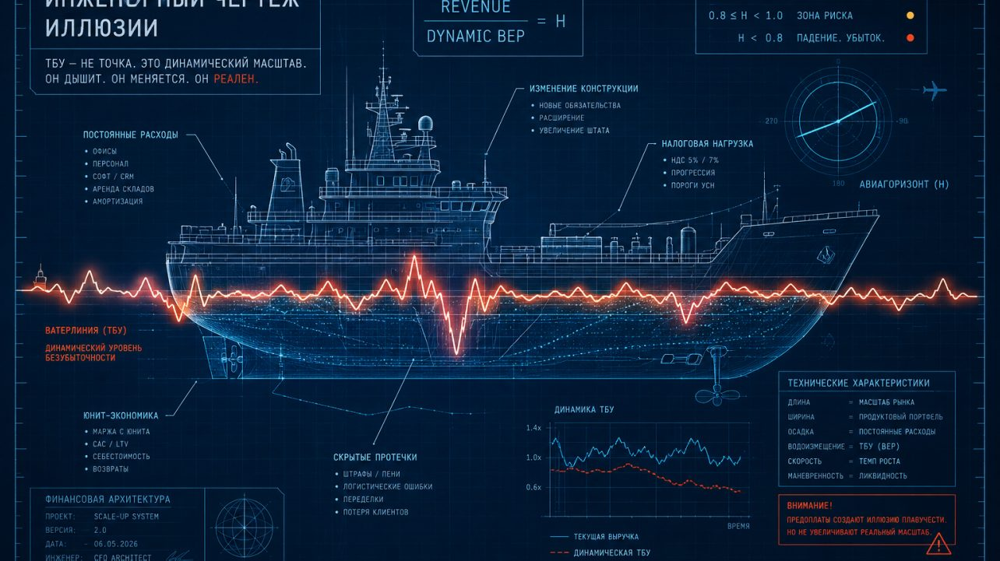

← Цикл «Финансовая архитектура» · 2 из 7
Иллюзия ТБУ: Ваш «ноль» не там, где вы думали

Есть очень опасный момент в жизни растущего бизнеса. Это момент, когда компания впервые начинает казаться прибыльной. Представьте картину: компания пробивает потолок продаж, графики выручки ползут вверх. В один действительно прекрасный день финансовый директор объявляет: «Мы прошли точку безубыточности». Вокруг восторг и аплодисменты — как при торжественном спуске на воду огромного лайнера. Звучит хлопок шампанского. Кажется, что теперь бизнес обрёл плавучесть, и может сам постоять за себя. Дальше — только чистая прибыль и масштабирование.
Проблема в том, что «Точка безубыточности» (ТБУ) — это самое опасное название в экономике.
Оно создает иллюзию статичных координат. На самом деле ТБУ — это не абстрактная финансовая цифра и не финишная черта. Это физический Масштаб вашего бизнеса. Он задаёт подробность вашей карты: десятки метров или сотни миль. Это конкретное количество ваших юнитов — отгруженных тонн, проданных кресел, открытых точек или пользователей, — которое ваша система должна прокрутить через себя, чтобы не пойти ко дну. Этот масштаб должен влезть в рынок, и не просто там разместиться, но иметь возможность свободно двигаться. А ещё этот масштаб задаёт гармонию своих составных частей: маленький винт не сможет толкать большой корабль, а гигантская капитанская рубка может вообще опрокинуть судно.
Я видел это десятки раз. Компания нащупала свой спасительный масштаб на 15 миллионах выручки. На радостях фаундеры открыли второй склад, удвоили бюджет на маркетинг и наняли трех РОПов. По отчетам всё выглядело отлично — выручка росла даже быстрее плана. Но через четыре месяца кассовый разрыв парализовал компанию. Им было нечем платить зарплаты.
Почему? Потому что требуемый масштаб бизнеса изменился вместе с новыми расходами, а они продолжали управлять судном по старым расчетам.
Вот три ловушки, из-за которых ваша расчетная ТБУ — это фантом, а компания прямо сейчас генерирует скрытые убытки.
Ловушка 1: Ватерлиния бизнеса
Свойство масштаба в том, что ТБУ — это не победная отметка. Это ватерлиния.
Вчера ваша компания была легкой лодкой. Объём в 1000 заказов было достаточным, чтобы держать ее на плаву и давать прибыль. Сегодня вы подписали договор на новый офис, купили дорогой софт и наняли еще двух человек. Вы не просто «развиваетесь» — вы загрузили на борт две тонны свинца в виде постоянных расходов. Бизнес стал тяжелее, и старая ватерлиния скрылась под водой.
Вы не «прошли» ТБУ. Вы критически утяжелили систему. И теперь, чтобы просто не утонуть, ваш объём продаж должен быть не 1000, а 1500 заказов. На этапе scale-up каждое новое управленческое решение тянет вас на дно, если мгновенно не компенсируется новым объёмом юнитов. При росте ТБУ вдвое вы может попасть в другую "весовую категорию" и бизнес придётся балансировать заново. Точнее будет сказать так: вы не можете прекратить гармонизировать части бизнеса иначе: либо не пройдёте под низким мостом, либо тут же сядете на мель.
Означает ли это, что классический P&L (Отчет о прибылях и убытках) больше не нужен? Нужен. Но не как приборная панель, а как инженерный чертеж. Вы не можете управлять кораблем в шторм, глядя в чертежи корпуса. Но если бизнес скроен по кривым чертежам — он утонет. P&L доказывает физику вашей модели: способна ли она в принципе генерировать прибыль. Но он не скажет, выживете ли вы сегодня, потому что он собирается постфактум.
Ловушка 2: Мираж грязных денег
Вторая ловушка — считать свой масштаб выживания по входящим деньгам, пренебрегая НДС. Запомните: НДС — не ваши деньги. Это чужой груз.
В новой налоговой реальности (введение НДС 5% и 7% на УСН) эта ошибка становится фатальной. Ваша ТБУ теперь зависит еще и от того, в какой налоговый коридор вы попали при росте выручки. Если вы считаете ТБУ по «грязным» поступлениям, вы искусственно занижаете себе планку требуемого масштаба. Вам кажется, что судно уже всплыло. Но когда приходит время отдавать этот груз государству, выясняется, что всё это время вы работали в минус. ТБУ считается строго без НДС. И если эта очищенная цифра делает вам больно — значит, вы наконец начали смотреть правде в глаза.
Ловушка 3: Пирамида авансов
Но худшее, что может случиться с компанией до достижения реального безубыточного масштаба — это шквал предоплат.
Денег на счетах становится много. Возникает иллюзия невероятной устойчивости. CEO уверен: «Мы победили. Модель сошлась».
На самом деле формируется классическая пирамида. В этот момент компания начинает жить за счет денег будущих клиентов. Вы финансируете свои раздутые постоянные косты чужими авансами. Пока восходящий поток новых поступлений растет — искусственная плавучесть держится. Но математически, на уровне каждого отдельного юнита, вы сжигаете маржу. Стоит рынку чуть замедлиться — начинается падение. Выясняется, что вы должны всем: клиентам, подрядчикам, банкам и сотрудникам.
Как вернуть контроль?
Чтобы не утонуть, компании нужен не оптимизм, а постоянный пересчет собственной плавучести. Каждое новое обязательство меняет ваш реальный «ноль». Каждый новый уровень масштаба требует новой конструкции бизнеса. Держите руку на пульсе ТБУ, используя контроль бюджетов, данные P&L и оперативные метрики бизнеса.
В прошлой статье я назвал этот индикатор «Авиагоризонт». Суть его неизменна для любой физической системы: это отношение вашей текущей среднедневной выручки к вашей сегодняшней, откорректированной ТБУ.
-
≥ 1 — система здорова, ваш текущий масштаб перекрывает косты.
-
< 1 — вы генерируете убыток. И неважно, сколько миллионов от предоплат прямо сейчас лежит у вас на счету.
Вы прошли ТБУ только тогда, когда каждый день видите её пройденной, и у вас есть запас прочности.
И здесь возникает следующий парадокс. Многие CEO искренне не понимают: если мы наконец-то стабильно находимся выше ватерлинии, и наша прибыль в отчетах стабильно зеленая... то почему у нас пустые счета?
О том, почему Прибыль ≠ Деньги, и как абсолютно «здоровые» на бумаге компании внезапно задыхаются без кэша, поговорим в следующей статье.